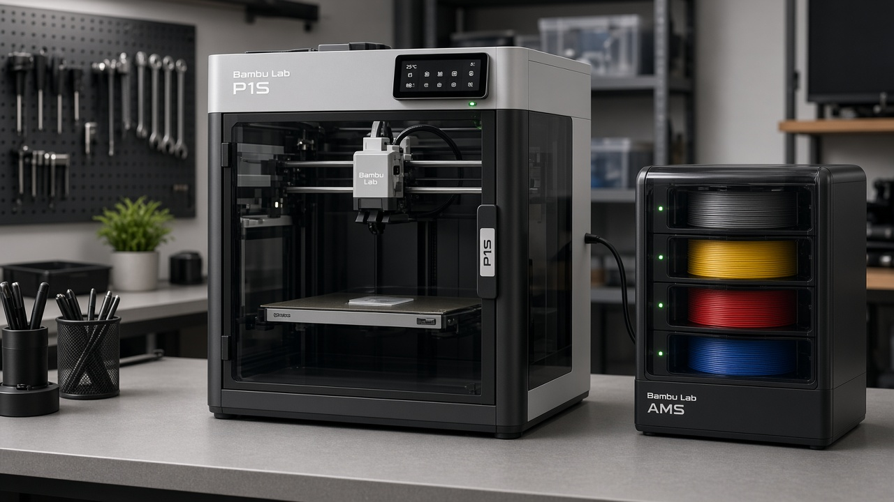
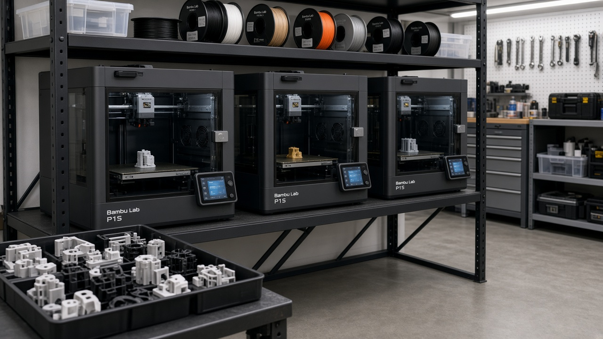
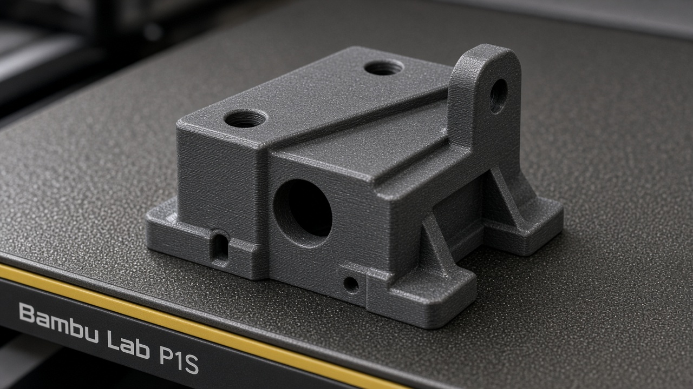

Fixtures & jigs
Hold-downs, alignment aids, and workholding for cell bring-up, tooling trials, and repeatable demos in non-irradiated environments.
In-house / garage–lab additive capability for fixtures, jigs, brackets, and rapid iteration that supports forward deployed engineering and RaaS work.
Digital MBSE Solutions LLC operates in-house additive manufacturing at a garage–lab scale to speed robotics integration work — not as a production AM shop, not as a Bambu Lab OEM partner, and not with invented customers or facility claims. The printers exist to cut turnaround on the physical bits that make cell bring-up faster: fixtures, jigs, brackets, sensor mounts, and iteration prototypes that support forward deployed engineering and RaaS engagements.
Single printer, multi-printer farm layout, and printed fixture examples — illustrative of lab tooling, not production volume.



Practical parts that unblock robotics integration — not end-use production AM marketing.
Hold-downs, alignment aids, and workholding for cell bring-up, tooling trials, and repeatable demos in non-irradiated environments.
Sensor, camera, and peripheral mounts when commercial hardware doesn’t match cell geometry on day one.
Same-day or next-day design–print–fit cycles so forward deployed work doesn’t stall waiting on machine shops for every plastic part.
Physical enablement for sensing, twin, and teleop/autonomy workflows — complementary to systems engineering, not a substitute for it.
We do not claim production-scale additive manufacturing, certified aerospace/medical AM processes, Bambu Lab OEM partnership, or named customer deployments. Phase II humanoid work, if referenced elsewhere on this site, remains a garage POC only.
Ask about additive manufacturing as part of a forward deployed or RaaS design partnership.
Contact us